이번 세션은 Solidity를 사용하여 Smart Contract 개발에 대해 이해하는 것이 목적입니다. 여러분은 단순히 문법을 배우는 것을 넘어, 이더리움 생태계의 핵심 원리를 이해하고, 스마트 컨트랙트를 작성하여 블록체인 상에 배포하는 개발 과정을 경험하게 됩니다.
학습 목표
- Smart Contract와 Solidity의 핵심 개념을 이해합니다.
- Ethereum 네트워크의 계정, 트랜잭션, 가스 구조를 살펴보며 작동 원리를 익힙니다.
- 간단한 컨트랙트를 설계·배포·검증하는 전체 흐름을 경험합니다.
- 개발 환경(Remix IDE, Hardhat)을 셋업하고 기본 테스트를 수행할 수 있습니다.
준비물
- 기본적인 프로그래밍 경험(타 언어여도 괜찮습니다)이 있으면 이해가 훨씬 빠릅니다.
- 설치된
Node.js와npm, VS Code와 같은 코드 에디터, 그리고 테스트용 지갑(Metamask 등)이 필요합니다.
목차
1. 이더리움(Ethereum)
블록체인의 기본 원리를 바탕으로 이더리움이 어떻게 동작하는지 알아봅니다. 사용자가 상호작용하는 계정(EOA/CA), 모든 상태 변화를 일으키는 트랜잭션, 그리고 연산의 대가로 지불하는 가스(Gas)의 개념을 명확히 이해합니다.
2. EVM(Ethereum Virtual Machine)
스마트 컨트랙트가 실행되는 격리된 샌드박스 환경인 EVM의 아키텍처를 살펴봅니다. EVM이 데이터를 처리하는 핵심 영역인 스택(Stack), 메모리(Memory), 스토리지(Storage)의 차이점을 배우고, 이것이 가스비와 프로그래밍에 어떤 영향을 미치는지 알아봅니다.
3. 스마트 컨트랙트(Smart Contract)
스마트 컨트랙트의 라이프사이클, 즉 작성 → 컴파일 → 배포 → 실행에 이르는 전체 단계를 명확히 이해하고 컨트랙트의 기본 구조를 파악합니다. 또한, 결정론적 프로그램에 대해 알아 봅니다.
4. Solidity
스마트 컨트랙트 작성을 위한 필수 문법을 예제 코드와 함께 학습합니다. 블록체인에 영구히 기록될 상태 변수, 컨트랙트의 기능을 정의하는 함수와 제어문, 그리고 데이터를 효율적으로 관리하는 매핑(Mapping)과 구조체(Struct) 사용법을 익힙니다.
5. 환경 설정 및 테스트
개발을 위해 Ethereum IDE인 리믹스(Remix IDE)와 HardHat을 중심으로 개발 환경을 설정합니다. 가상의 테스트넷에 컨트랙트를 배포하고, 작성한 함수의 기능이 올바르게 동작하는지 테스트하고 디버깅하는 방법을 실습합니다.
6. 프로젝트 준비
진행할 프로젝트의 요구사항을 정의하고 아키텍처를 소개합니다. 앞으로 구현해야할 기능과 주의해야할 점을 함께 살펴 봅니다.
이더리움(Ethereum)은 전 세계에 분산되어 있는 컴퓨터로, 그 분산된 구조에도 불구하고 하나의 컴퓨터(Truly Global Singleton)처럼 동작하며, 실패나 정지, 검열을 겪지 않습니다. 매우 느리고, 구성 요소는 느슨하게 연결되었다가 끊어지기를 반복 하지만, 한치의 오차도 없이 작동하는 완벽한 컴퓨터압니다. 또한, 여러 명의 사용자가 동시에 참여할 수 있고, 누구나 자유롭게 접근할 수 있는 개방적인 시스템입니다.
이더리움은 원래 범용 프로그래밍 언어를 통해 블록체인 기반의 다양한 가능성을 실현하기 위해 고안되었습니다. 그 범위는 에스크로 거래, 인출 제한, 금융 계약, 갬블링 시장 등 다양합니다. 튜링 완전(Turing Complete)한 프로그래밍 언어를 지원함으로써, 어떠한 형태의 거래나 기능도 스마트 계약(Smart Contracts)을 통해 자유롭게 구현할 수 있게 되었습니다. 이로써, 단순한 암호화폐를 넘어서, 복잡한 계약과 거래를 실행할 수 있는 강력한 플랫폼이 탄생하게 된 것입니다.
하지만, 이더리움이 처음 의도한 것을 넘어서 그 자체가 하나의 세계적 컴퓨터(World Computer)처럼 동작한다는 점입니다. 이더리움의 스마트 컨트랙트는 분산화된 네트워크에서 자동으로 실행되는 프로그램으로, 중개자 없이 신뢰할 수 있는 거래를 가능하게 합니다. 이 시스템을 이해하고 스마트 컨트랙트를 개발하는 것은 이더리움의 잠재력을 최대한 활용하는 데 매우 중요한 부분입니다.
자주 등장하는 이더리움 관련 용어
- 블록(Block): 트랜잭션 묶음과 이를 설명하는 헤더로 구성된 데이터 단위입니다. 각 블록은 바로 이전 블록의 해시를 포함해 체인 형태로 연결되고, 이 연결이 위변조 방지를 돕습니다.
- 합의(Consensus): 네트워크 참가자(검증자)가 동일한 상태를 공유하도록 만드는 규칙입니다. 현재 Ethereum Mainnet은 Proof of Stake 합의 방식을 사용합니다.
- 노드(Node): Ethereum 클라이언트를 실행하여 블록을 검증하고 상태를 동기화하는 컴퓨터입니다.
- 스마트 컨트랙트(Smart Contract): 블록체인에 배포되어 조건에 따라 자동으로 실행되는 프로그램입니다. 코드와 데이터가 모두 온체인에 있기 때문에 중개자 없이 신뢰를 확보할 수 있습니다.
- 상태(State): 이더리움 네트워크가 현재 보유한 모든 계정의 잔액, 코드, 저장소 등의 전체 정보입니다.
- EVM (Ethereum Virtual Machine): EVM은 이더리움의 가상 컴퓨터로, 스마트 컨트랙트의 바이트코드를 실행하여 상태 변화를 일으키는 핵심 엔진입니다.
상태(World State)
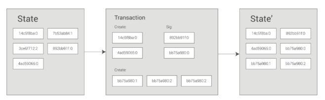
이더리움은 트랜잭션 기반의 state machine입니다. 네트워크 상에 저장되어 있는 모든 정보를 월드 스테이트(World State) 라고 부르며, 새 트랜잭션이 실행될 때마다 규칙에 따라 이전 상태가 다음 상태로 전이됩니다.
- 월드 스테이트는 주소를 키로, 계정 상태(Account State)를 값으로 가지는 거대한 맵(map)입니다.
- 각 계정 상태에는 잔액(balance), nonce, 저장소(storage) 등이 들어 있으며, 컨트랙트 계정이라면 바이트코드도 함께 저장됩니다.
- 전체 상태 요약본은 머클 패트리샤 트리(Merkle Patricia Tree) 에 보관되고, 그 루트 해시는 블록 헤더에 기록됩니다.
머클 루트 덕분에 노드는 전체 데이터를 모두 내려받지 않고도 상태의 무결성을 검증할 수 있습니다. 또한 블록 헤더에 포함된 상태 루트가 체인으로 연결되기 때문에, 과거 블록이 변경되면 이후 해시도 모두 달라져 위변조가 즉시 탐지됩니다.
트랜잭션(Transactions)
트랜잭션(Transaction)은 네트워크에서 실행되는 모든 상태 변화의 최소 단위입니다. 단순 ETH 전송부터 복잡한 Smart Contract 함수 호출까지 모두 트랜잭션으로 표현됩니다. 모든 트랜잭션은 발신자(EOA)의 개인 키로 서명되어야 하며, 이 서명 덕분에 네트워크는 요청이 위조되지 않았음을 확인할 수 있습니다.
트랜잭션이 블록에 포함될 때는 머클 트리(Merkle Tree) 로 묶여 하나의 머클 루트를 생성하고, 이 루트가 블록 헤더에 기록됩니다. 따라서 특정 트랜잭션이 블록 안에 포함되었는지 빠르게 증명할 수 있고, 데이터가 중간에서 변조되면 머클 루트가 달라져 즉시 탐지됩니다.
트랜잭션 핵심 필드
필드 | 설명 | 설명 |
| 발신 계정이 지금까지 보낸 트랜잭션 수 | 순서를 보장하며 이중 전송을 막습니다. |
| 이번 트랜잭션에서 최대 사용할 가스량 | 너무 낮으면 실행 중단, 너무 높으면 남은 가스는 환불됩니다. |
| 지불할 최대 가스 단가(EIP-1559 기준) | = base fee + priority fee 상한선입니다. |
| 검증자에게 주는 추가 팁 | 빠른 포함을 원할수록 조금 더 높게 설정합니다. |
| 전송 대상 계정 주소(컨트랙트 호출 시 컨트랙트 주소) | 컨트랙트 배포 트랜잭션이라면 비워 두고 |
| 함께 보낼 ETH 금액 | 함수 호출 시에도 ETH를 동시에 보낼 수 있습니다. |
| 함수 호출 인코딩 값 또는 컨트랙트 바이트코드 | 함수 호출 시 |
| 어느 네트워크용인지 식별하는 값 |
|
서명(Signature) 흐름
- 지갑이 트랜잭션 정보를 정해진 순서대로 정리(직렬화)합니다.
- 직렬화된 바이트를
keccak256해시함수에 넣어 메시지 다이제스트(32바이트 길이의 요약값)를 만듭니다. - 지갑은 개인 키로 이 요약값에 서명해
(v, r, s)세 개의 서명값을 만듭니다. - 이 서명을 트랜잭션에 붙여 네트워크로 전송합니다.
- 노드는 서명이 맞는지 확인하고, 가스와 수수료가 충분하면 트랜잭션을 실행합니다.

EVM은 위와 같은 구조를 가진 가상 머신입니다. 보다시피 Stack Machine입니다. 다만, 다른 Machine과 다르게 Gas라는 독특한 매커니즘을 가지고 있습니다. 트랜잭션이 실행되면 EVM은 프로그램 카운터(PC)가 명령어를 하나씩 읽으며, 각 연산(Operation)을 수행할 때마다 가스를 소모합니다. 계산은 스택(Stack)과 메모리(Memory)를 이용해 처리되며, 스토리지(Storage)에 접근하거나 값을 변경할 때는 훨씬 더 많은 가스가 필요합니다. 또한 외부 컨트랙트를 호출하는 메시지 콜(Message call)이 발생하면 새로운 EVM 실행 환경이 만들어지고, 일부 가스가 전달되어 실행됩니다.
메모리 영역 요약
영역 | 수명 | 용도 | 주 사용처 | 가스 비용 |
Storage | 블록체인에 영구 저장 | 읽기/쓰기 | 상태 변수, 영구 데이터 | 매우 높음 |
Memory | 함수 실행 동안 임시 유지 | 읽기/쓰기 | 함수 지역 변수, 반환값 | 중간 |
Calldata | 함수 호출 동안 유지 | 읽기 전용 | 외부 함수 매개변수 | 매우 낮음 |
Stack | 한 연산 내에서만 유지 | 읽기/쓰기 | EVM 연산 피연산자, 제어 흐름 관리 | 매우 낮음 |
Storage
Storage는 블록체인에 영구적으로 기록되는 데이터 영역입니다. 키(Key)와 값(Value) 쌍으로 구성된 거대한 맵 구조이며, 하나의 슬롯은 32바이트입니다. 상태 변수처럼 거래 후에도 남아야 하는 정보는 모두 Storage에 담기지만, 연산이 매우 비싸기 때문에 꼭 필요한 데이터만 저장해야 합니다.
Memory
Memory는 함수 실행 동안에만 유지되는 임시 저장소입니다. 함수가 호출될 때 초기화되고, 종료되면 자동으로 해제됩니다. Storage보다 훨씬 저렴하지만, 필요할 때마다 크기가 동적으로 늘어나므로 불필요한 복사를 줄이는 습관이 가스 최적화에 도움이 됩니다.
Calldata
Calldata는 외부 계정이나 다른 컨트랙트가 함수를 호출할 때 전달되는 읽기 전용 데이터 버퍼입니다. external 함수의 매개변수가 여기에 위치하며, 수정이 불가능하기 때문에 안전하고 비용도 가장 저렴합니다.
Stack
Stack은 EVM 연산이 사용하는 초고속 메모리입니다. 최대 깊이는 1024로 제한되어 있으며, 대부분의 Solidity 코드는 컴파일 과정에서 자동으로 스택을 사용하므로 개발자가 직접 조작할 일은 거의 없습니다. 다만 너무 많은 지역 변수를 동시에 사용할 경우 스택이 가득 차 stack too deep 오류가 발생할 수 있습니다.
가스
컴퓨터에서 연산을 하면 비용이 들어갑니다. 이더리움도 마찬가지입니다. 이더리움에선 가스라는 수수료를 도입해 이더리움 네트워크의 보안을 유지합니다. 네트워크에서 실행되는 모든 연산에 대해 수수료를 부과함으로써 악의적인 행위자가 네트워크에 스팸을 보내는 것을 방지합니다. 코드에서 우발적이거나 악의적인 무한 루프 또는 기타 연산 낭비를 방지하기 위해 각 트랜잭션은 사용할 수 있는 코드 실행 단계 수에 제한을 두어야 합니다. 연산의 기본 단위는 "가스"입니다.
단위
가스 요금은 이더리움의 기본 화폐인 이더(ETH)로 지불해야 합니다. 가스 가격은 일반적으로 ETH의 단위인 gwei로 표시됩니다. 1 gwei는 ETH의 10억분의 1(10-9 ETH)에 해당합니다.
gwei는 giga-wei의 줄임말로 109 wei를 뜻합니다. 다시 말해 1 gwei = 1,000,000,000 wei이고, 1 ETH = 1,000,000,000,000,000,000 wei입니다. 실무에서는 "30 gwei", "50 gwei"처럼 표현하며, gasLimit 21,000과 gasPrice 30 gwei를 곱하면 약 0.00063 ETH의 기본 전송 수수료가 나온다는 식으로 계산합니다.
가스비
트랜잭션을 제출할 때 지불할 가스량을 설정할 수 있습니다. 특정 가스량을 제시하면 트랜잭션이 다음 블록에 포함되도록 입찰하는 것입니다. 가스량을 너무 적게 제시하면 검증자가 트랜잭션을 포함할 가능성이 낮아져 트랜잭션이 늦게 실행되거나 전혀 실행되지 않을 수 있습니다. 가스량을 너무 많이 제시하면 ETH를 낭비할 수 있습니다. 지불해야하는 가스량을 예상하는 것이 스마트 컨트랙트를 실행하고 비용관리하는데 있어 도움이 됩니다.
총 가스비는 base fee(요금)과 priority fee(팁)으로 나뉩니다.
프로토콜에 의해 자동으로 base fee는 설정됩니다. 거래가 유효한 것으로 간주되려면 최소 이 금액을 지불해야 합니다. priority fee는 검증자에게 주는 추가적인 요금입니다. priority fee가 높으면 검증자에게 거래가 매력적이어서 다음 블록에 포함될 가능성이 높아집니다. 따라서 적정 수수료는 거래를 전송할 당시의 네트워크 사용량에 따라 결정됩니다. 수요가 많으면 수수료를 priority더 높게 책정해야 할 수 있지만, 수요가 적으면 수수료를 더 낮게 책정할 수 있습니다.
수수료 계산은 다음과 같습니다.
units of gas used * (base fee + priority fee)
기본 수수료
모든 블록에는 예비 가격 역할을 하는 기본 수수료가 있습니다. 블록에 포함되려면 가스당 제시 가격이 기본 수수료와 최소 동일해야 합니다. 기본 수수료는 현재 블록과는 별도로 계산되며, 이전 블록에 따라 결정되므로 사용자가 거래 수수료를 더 쉽게 예측할 수 있습니다. 블록이 생성되면 이 기본 수수료는 소각되어 유통에서 제거됩니다.
기본 수수료는 이전 블록의 크기(모든 거래에 사용된 가스량)를 목표 블록 크기와 비교하는 공식을 통해 계산됩니다. 목표 블록 크기를 초과할 경우, 기본 수수료는 블록당 최대 12.5%까지 증가합니다. 이러한 기하급수적인 증가로 인해 블록 크기가 무한정 높게 유지되는 것은 경제적으로 불가능합니다.
블록 번호 | 포함된 가스 | 수수료 | 현재 기본 요금 |
1 | 15M | 0% | 100 gwei |
2 | 30M | 0% | 100 gwei |
3 | 30M | 12.5% | 112.5 gwei |
4 | 30M | 12.5% | 126.6 gwei |
5 | 30M | 12.5% | 142.4 gwei |
6 | 30M | 12.5% | 160.2 gwei |
7 | 30M | 12.5% | 180.2 gwei |
8 | 30M | 12.5% | 202.7 gwei |
... | ... | 12.5% | ... |
30 | 30M | 12.5% | 2705.6 gwei |
... | ... | 12.5% | ... |
50 | 30M | 12.5% | 28531.3 gwei |
... | ... | 12.5% | ... |
100 | 30M | 12.5% | 10302608.6 gwei |
우선 수수료(팁)
우선 수수료(팁)는 검증자가 블록에 거래를 포함하도록 유도합니다. 팁이 없다면 검증자는 동일한 블록 보상을 받기 때문에 빈 블록을 채굴하는 것이 경제적으로 타당하다고 생각할 것입니다. 소액의 팁은 검증자에게 거래를 포함할 최소한의 유인을 제공합니다. 동일 블록의 다른 거래보다 우선적으로 실행되도록 거래가 이루어지도록 하려면, 더 높은 팁을 추가하여 경쟁 거래보다 높은 입찰가를 유도할 수 있습니다.
Fee Schedule
Fee Schedule는 이더리움과 같은 블록체인 네트워크에서 트랜잭션을 처리할 때 발생하는 비용을 정의한 목록입니다. 이 비용은 가스(Gas) 단위로 측정되며, 각 연산이 블록체인에서 실행될 때 필요한 연산 자원에 대해 지불해야 하는 비용을 나타냅니다. 이를 바탕으로 units of gas used를 구할 수 있습니다. 여기서는 주요 항목별 가스 사용량이 얼마나 되는지 확인합시다.
항목 이름 | 값 | 설명 |
Gzero | 0 | Wzero 집합의 연산에 대해 지불되는 가스량 |
Gjumpdest | 1 | JUMPDEST 연산에 대해 지불되는 가스량 |
Gbase | 2 | Wbase 집합의 연산에 대해 지불되는 가스량 |
Gverylow | 3 | Wverylow 집합의 연산에 대해 지불되는 가스량 |
Glow | 5 | Wlow 집합의 연산에 대해 지불되는 가스량 |
Gmid | 8 | Wmid 집합의 연산에 대해 지불되는 가스량 |
Ghigh | 10 | Whigh 집합의 연산에 대해 지불되는 가스량 |
Gwarmaccess | 100 | 워밍된 계정이나 저장소 접근에 드는 비용 |
Gaccesslistaddress | 2400 | 접근 목록을 통한 계정 워밍에 드는 비용 |
Gaccessliststorage | 1900 | 접근 목록을 통한 저장소 워밍에 드는 비용 |
Gcoldaccountaccess | 2600 | cold account(처음 접근하는 계정) 접근에 드는 비용 |
Gcoldsload | 2100 | cold storage(처음 읽거나 쓰는 저장소 키) 접근에 드는 비용 |
Gsset | 20000 | 저장소 값이 zero에서 non-zero로 설정될 때 SSTORE 연산 비용 |
Gsreset | 2900 | 저장소 값이 제로 상태로 유지되거나 제로로 설정될 때 SSTORE 연산 비용 |
Rsclear | 4800 | 저장소 값이 비제로에서 제로로 설정될 때 환불 금액 (환불 카운터에 추가됨) |
Gselfdestruct | 5000 | SELFDESTRUCT 연산에 대해 지불되는 가스량 |
Gcreate | 32000 | CREATE 연산에 대해 지불되는 가스량 |
Gcodedeposit | 200 | CREATE 연산에서 코드가 상태에 배치될 때 각 바이트당 지불되는 금액 |
Ginitcodeword | 2 | 배포 트랜잭션, CREATE 또는 CREATE2 연산의 초기 코드에서 각 단어당 지불되는 금액 |
Gcallvalue | 9000 | CALL 연산에서 non-zero 값 전송에 대해 지불되는 가스량 |
Gcallstipend | 2300 | non-zero 값 전송을 위한 호출 계약에 대해 Gcallvalue에서 차감되는 기부금 |
Gnewaccount | 25000 | CALL 또는 SELFDESTRUCT 연산으로 계정이 생성될 때 지불되는 금액 |
Gexp | 10 | EXP 연산에 대한 부분 지불 |
Gexpbyte | 50 | EXP 연산에서 지수의 바이트 수에 곱해져 지불되는 부분 금액 |
Gmemory | 3 | 메모리를 확장할 때 추가적인 단어에 대해 지불되는 금액 |
Gtxcreate | 32000 | Homestead 전환 이후 모든 계약 생성 트랜잭션에 대해 지불되는 금액 |
Gtxdatazero | 4 | 트랜잭션의 데이터 또는 코드에서 0 바이트마다 지불되는 금액 |
Gtxdatanonzero | 16 | 트랜잭션의 데이터 또는 코드에서 0이 아닌 바이트마다 지불되는 금액 |
Gtransaction | 21000 | 각 트랜잭션에 대해 지불되는 금액 |
Glog | 375 | LOG 연산(이벤트 기록)에 대한 기본 금액 |
Glogdata | 8 | LOG 연산의 데이터에서 각 바이트마다 지불되는 금액 |
Glogtopic | 375 | LOG 연산에서 각 주제마다 지불되는 금액 |
Gkeccak256 | 30 | 각 KECCAK256 연산에 대해 지불되는 금액 |
Gkeccak256word | 6 | KECCAK256 연산의 입력 데이터에 대해 각 단어마다 지불되는 금액 |
Gcopy | 3 | COPY 연산에 대한 부분 지불, 복사된 단어 수에 곱해져 지불됨 |
Gblockhash | 20 | BLOCKHASH 연산에 대해 지불되는 금액 |
최대 수수료
네트워크에서 거래를 실행하기 위해 사용자는 거래 실행에 대해 지불할 의향이 있는 최대 한도(maxFeePerGas)를 지정할 수 있습니다. 거래가 실행되려면 최대 수수료가 기본 수수료와 팁의 합계보다 커야 합니다. 거래 발신자는 최대 수수료와 기본 수수료 및 팁의 합계 차액을 환불받습니다.
블록 크기
각 블록의 목표 크기는 1,500만 가스이지만, 블록 크기는 네트워크 수요에 따라 증가하거나 감소하며, 블록 한도인 3,000만 가스(목표 블록 크기의 2배)까지 증가합니다. 즉, 블록 크기가 목표 블록 크기보다 크면 프로토콜은 다음 블록의 기본 수수료를 높입니다. 마찬가지로, 블록 크기가 목표 블록 크기보다 작으면 프로토콜은 기본 수수료를 낮춥니다. 기본 수수료가 조정되는 양은 현재 블록 크기가 목표에서 얼마나 떨어져 있는지에 비례합니다.
가스 한도
가스 한도는 거래 시 사용할 수 있는 최대 가스량을 의미합니다. 스마트 컨트랙트를 사용하는 복잡한 거래는 더 많은 연산 작업이 필요하므로 단순 결제보다 더 높은 가스 한도가 필요합니다. 일반적인 ETH 전송에는 21,000의 가스 한도가 필요합니다. 가스 한도를 너무 낮게 설정하면 트랜잭션은 검증 단계에서 실패합니다. 블록에 포함되기 전에 거부되어 가스가 전혀 소비되지 않습니다. 반면, 트랜잭션 실행 중 가스가 부족해지는 경우(e.g. 스마트 컨트랙트가 가스를 모두 사용하는 경우), EVM은 변경 사항을 되돌리지만, 제공된 가스는 수행된 작업에 대해 소비됩니다.
Smart Contract Lifecycle
Smart Contract는 작성, 컴파일, 배포, 실행의 과정을 거치게 됩니다. 주요 흐름은 아래의 그림과 같습니다.
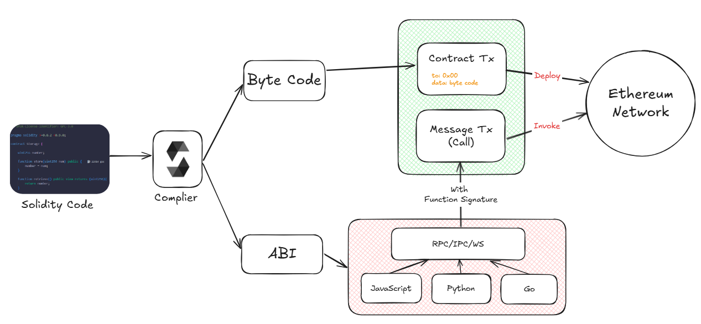
작성
개발자는 Solidity, Vyper와 같은 스마트 컨트랙트 언어를 사용하여 코드를 작성합니다. 이 단계에서는 계약의 목적, 데이터 구조, 상태 변수, 함수 등을 정의합니다. 예를 들어, 토큰 발행(ERC-20), 투표 시스템과 같은 비즈니스 로직을 코드로 표현합니다. 이 단계에서 컨트랙트는 아직 단순한 소스 코드일 뿐, 블록체인과 연결되지 않았습니다.
컴파일
작성된 Solidity 코드는 Solidity Compiler를 통해 Bytecode와 ABI(Application Binary Interface)로 변환됩니다.
바이트코드(Bytecode)는 EVM 위에서 실제로 실행되는 코드입니다. Contract transaction의 data 필드에 그대로 들어가게 됩니다. 컨트랙트가 실행될 때 이 data 필드의 Bytecode를 읽어와 실행되게 됩니다.
ABI는 외부 애플리케이션이 컨트랙트 함수를 호출할 때 사용하는 인터페이스입니다. ABI는 컨트랙트의 구조를 보여주며 외부 애플리케이션에서 컨트랙트의 함수를 호출하거나 데이터를 얻고자 하기 위해 사용됩니다. ABI에 정의된 함수에 대한 정보를 이용해 function selector를 구하고 message transaction(함수 호출 트랜잭션)의 앞에 function selector를 넣어 해당 함수나 데이터의 Bytecode 위치를 찾고 실행할 수 있게 해줍니다.
function selector는 4byte로 구성되며 함수의 정보(함수명, parameter의 type)을 Keccak256으로 해시했을 때, 빅 엔디안 기준 앞쪽 4byte를 취한 값입니다.
컴파일된 컨트랙트는 function selector로 분기처리하는 로직을 가지고 있습니다. 그렇기 때문에 function Selector 생성 규칙은 결정론적입니다. 이는 아래의 컴파일 전 컨트랙트와 컴파일된 컨트랙트를 통해 확인할 수 있습니다.
// SPDX-License-Identifier: GPL-3.0
pragma solidity >=0.5.0 <0.9.0;
contract C {
function one() public pure returns (uint) {
return 1;
}
}
======= contract.sol:C =======
EVM assembly:
/* "contract.sol":0:86 contract C {... */
mstore(0x40, 0x80) // free memory pointer 초기화
callvalue
dup1
iszero
tag_1
jumpi
// 배포 시 ETH를 보냈다면 revert (non-payable 생성자이기 때문)
0x00
dup1
revert
tag_1:
pop
dataSize(sub_0)
dup1
dataOffset(sub_0)
0x00
codecopy // sub_0(=런타임 코드) 바이트를 0x00에 복사
0x00
return // 복사한 바이트들을 반환 => 이게 컨트랙트의 '런타임 코드'가 됨
stop
sub_0: assembly {
/* "contract.sol":0:86 contract C {... */
mstore(0x40, 0x80) // free memory pointer 초기화
callvalue
dup1
iszero
tag_1
jumpi
0x00에 // 함수 호출에 ETH 보내면 revert (모든 함수가 non-payable하기 때문)
dup1
revert
tag_1:
pop
jumpi(tag_2, lt(calldatasize, 0x04)) // calldata 길이가 4바이트 미만이면 tag_2로(=revert)
shr(0xe0, calldataload(0x00)) // 앞 4바이트 추출 (224비트 우측 쉬프트)
dup1
0x901717d1 // Function Selector와 비교
eq
tag_3
jumpi
tag_2:
// Selector 매칭되는 함수가 없으므로 revert (fallback 없음)
0x00
dup1
revert
/* "contract.sol":17:84 function one() public pure returns (uint) {... */
tag_3:
tag_4
tag_5
jump // 내부 점프: tag_5(본문) 실행 후, tag_4(리턴 인코딩)로 복귀
tag_4:
mload(0x40)
tag_6
swap2
swap1
tag_7
jump // 결과를 ABI로 써서 반환하는 유틸리티 경로
tag_6:
mload(0x40)
dup1
swap2
sub
swap1
return // 메모리 [ptr .. ptr+len) 을 반환
tag_5:
/* "contract.sol":53:57 uint */
0x00
/* "contract.sol":76:77 1 */
0x01
/* "contract.sol":69:77 return 1 */
swap1
pop
/* "contract.sol":17:84 function one() public pure returns (uint) {... */
swap1
jump // out
/* "#utility.yul":7:125 */
tag_10:
/* "#utility.yul":94:118 */
tag_12
/* "#utility.yul":112:117 */
dup2
/* "#utility.yul":94:118 */
tag_13
jump // in
tag_12:
/* "#utility.yul":89:92 */
dup3
/* "#utility.yul":82:119 */
mstore
/* "#utility.yul":72:125 */
pop
pop
jump // out
/* "#utility.yul":131:353 */
/* ABI 인코딩 유틸 */
tag_7:
// 반환 버퍼 시작/끝 계산 (ptr, ptr+32)
// 'uint' 단일 값이므로 32바이트 슬롯에 값 저장
0x00
/* "#utility.yul":262:264 */
0x20
/* "#utility.yul":251:260 */
dup3
/* "#utility.yul":247:265 */
add
/* "#utility.yul":239:265 */
swap1
pop
/* "#utility.yul":275:346 */
tag_15
/* "#utility.yul":343:344 */
0x00
/* "#utility.yul":332:341 */
dup4
/* "#utility.yul":328:345 */
add
/* "#utility.yul":319:325 */
dup5
/* "#utility.yul":275:346 */
tag_10
// 정리 후 상위 호출 지점으로 복귀
jump // in
tag_15:
/* "#utility.yul":229:353 */
swap3
swap2
pop
pop
jump // out
/* "#utility.yul":359:436 */
tag_13:
0x00
/* "#utility.yul":425:430 */
dup2
/* "#utility.yul":414:430 */
swap1
pop
/* "#utility.yul":404:436 */
swap2
swap1
pop
jump // out
auxdata: 0xa2646970667358221220a5874f19737ddd4c5d77ace1619e5160c67b3d4bedac75fce908fed32d98899864736f6c637827302e382e342d646576656c6f702e323032312e332e33302b636f6d6d69742e65613065363933380058
}
배포
컴파일된 바이트코드를 Ethereum 네트워크에 트랜잭션 형태로 전송하여 Contract address(컨트랙트 계정)을 생성합니다. 이때 발생하는 가스비(Gas Fee)는 네트워크 검증자에게 지급됩니다.
Contract Address는 컨트랙트가 위치할 주소입니다. Contract Address는 배포자(sender)의 주소와 해당 주소의 nonce를 이용해 결정론적으로 생성됩니다.
keccak256( RLP.encode([sender, nonce]) )[12:]
여기서 마지막 20byte가 새로운 컨트랙트의 주소가 됩니다. 같은 sender + nonce 조합은 재사용될 수 없으므로, 네트워크 상에서 주소 충돌은 발생하지 않습니다. 또한, 이미 존재하는 주소에 새로운 컨트랙트를 덮어쓸 수는 없습니다. Address는 ethereum network에 올라가므로 한 번 생성된 contract address는 변경할 수 없습니다. Contract를 실행하기 위해서 message transaction의 to에 contract address값을 넣습니다.
실행
배포가 끝난 후에는 누구나 컨트랙트 주소를 이용해 call 또는 transaction을 보낼 수 있습니다. 단순 조회 함수(view/pure)는 가스를 소모하지 않고 읽을 수 있으며, 상태 변경 함수는 반드시 가스를 내고 트랜잭션을 보내야 합니다. 배포가 완료되면 해당 컨트랙트는 고유한 주소(Address)를 가지며, 누구나 이 주소를 통해 접근할 수 있습니다.
결정론적 프로그램
결정론적 프로그램은 같은 입력에 대해 항상 같은 출력을 보장하는 프로그램을 말합니다. 실행 환경이나 실행 시점, 실행하는 주체가 달라도 결과가 변하지 않아야 합니다. 그러므로 다른 다른 사용자가 스마트 컨트랙트를 실행하더라도 결과는 항상 동일하게 나타납니다.
// 결정론적: 같은 입력(a, b)이면 언제나 같은 출력
function add(uint a, uint b) public pure returns (uint) {
return a + b;
}
// 비결정적: 실행 시점(timestamp)마다 달라짐
function badRandom() public view returns (uint) {
return uint(keccak256(abi.encodePacked(block.timestamp, msg.sender)));
}
이러한 특성은 컴파일 단계에서 컨트랙트의 가스 사용량과 동작 방식을 정확히 측정할 수 있습니다.
구조 (라이센스, 버전 표기 등)
Solidity 파일의 기본 구조는 다음과 같습니다. 이 구조는 모든 Solidity 계약에서 기본적으로 포함되어야 합니다.
// SPDX-License-Identifier: MIT
pragma solidity ^0.8.24;
contract Hello {
// 스마트 계약 내용
}
- SPDX-License-Identifier: MIT
SPDX 라이선스는 솔리디티 컴파일러 버전 0.6.8부터 스마트 컨트랙트 최상단에 명시해야 합니다. 스마트 컨트랙트 소스 코드는 공유되어 사용할수록 코드의 신뢰도가 높아집니다. MIT 라이선스는 자유롭게 사용하고 수정할 수 있는 조건을 제공하는 오픈소스 라이선스입니다. 다른 라이선스를 사용하려면 적절한 SPDX 식별자를 선택해야 합니다.
- pragma solidity ^0.8.24;
pragma solidity는 현재 작성된 스마트 컨트랙트의 솔리디티 컴파일러 버전을 나타냅니다. 이 코드는 스마트 계약의 호환성 범위를 지정합니다. ^0.8.24는 컴파일러가 0.8.24 버전 이상이지만 0.9.0 미만일 경우에만 컴파일이 가능하다는 의미입니다. 이 구문은 코드의 정확한 버전 호환성을 보장하여, 버전 차이로 인한 에러를 방지하는 데 도움을 줍니다.
^: 지정한 버전 이상, 하지만 다음 메이저 버전은 포함하지 않음~: 같은 마이너 버전 내에서만 허용- 기호가 없는 경우 해당 버전만 허용
- contracts
contract는 스마트 계약의 시작을 알리는 키워드입니다. 이 구문은 contract {컨트랙트 이름}의 형태로 작성되며, Solidity에서 스마트 계약을 정의할 때 사용됩니다. Hello는 이 계약의 이름이며, 계약 내에서 정의된 함수나 상태 변수들을 포함할 수 있습니다.
- 주석
주석은 코드의 부연 설명이나 메모 정도로 생각하면 됩니다. 개발자를 위한 용도로 사용되면 프로그램의 동작에는 영향을 미치지 않습니다. 이번 세션에서는 코드의 부연 설명을 위해 주로 사용할 예정입니다.
주석의 종류는 두 가지가 있습니다:
- 행 단위 주석 (//): 한 줄만 주석 처리할 때 사용합니다.
// 이 변수는 숫자를 저장합니다
uint public number;
- 블럭 단위 주석 (/_ ... _/): 여러 줄의 주석을 한 번에 작성할 때 사용합니다.
// 이 변수는 숫자를 저장합니다
uint public number;
변수와 자료형
변수
변수는 변하는 값을 가질 수 있는 메모리 공간입니다. 밑의 예시는 변수를 정의하는 방법입니다. 변수를 처음 정의할 때 자료형을 변수에 명시해야 하며 변수명은 예약어를 제외하고 자유롭게 정할 수 있습니다. 예시에서 변수명은 a이고 값은 5입니다. 변수명을 정할 때는 무슨 용도인지 알아보기 쉽도록 작성하는 것을 추천드립니다. 변수명은 주로 소문자로 시작하고 숫자와 특수기호로 시작하는 이름은 지을 수 없습니다.
uint a = 5;
자료형
자료형은 데이터를 분류하는 기준이고 크게 값 타입(Value Type)과 참조 타입(Reference Type)이 있습니다. 먼저 값 타입에 대해 알아봅시다. 변수가 전달될 때 값(value)이 전달됩니다. 즉, 이 타입이 함수의 인자로 사용되거나 할당값으로 사용될 땐, 값이 복사됩니다. 자세한 내용을 여기를 참고해주세요
값 타입 자료형
- Booleans
bool: 가능한 값은 상수 true 그리고 false 입니다.
연산자:
!(논리 부정)&&(논리 AND, "and")||(논리 OR, "or")==(같음)!=(같지 않음)
|| 과 && 에는 일반적인 short-circuiting rules이 적용됩니다. 이것은 f(x) || g(y) 에서 만약 f(x) 가 true 라면, g(y) 의 값을 확인하지 않는다면 부작용이 있을 수 있음에도 불구하고 값을 확인하지 않는것을 의미합니다.
- 정수
int / uint: 다양한 크기의 부호있는 정수 타입, 부호없는 정수 타입이 존재합니다. uint8 에서 uint256 까지, 그리고 int8 부터 int256 까지 8비트 단위로 키워드가 존재합니다. uint 와 int 는 각각 uint256 와 int256 의 별칭입니다. 사용 가능한 정수 타입과 범위는 다음과 같습니다.
int 범위
타입 | ** 범위 ** |
int8 | [-128, 127] (= [-27, -27 - 1]) |
int16 | [-32,768, 32,767] (= [-215, -215 - 1]) |
int32 | [-2,147,483,648, 2,147,483,647] (= [-231, -231 - 1]) |
int64 | [-263, -263 - 1] |
int128 | [-2127, -2127 - 1] |
int256 | [-2255, -2255 - 1] |
uint 범위
타입 | ** 범위 ** |
uint8 | [0, 255] (= [0, -28 - 1]) |
uint16 | [0, 65,535] (= [0, -216 - 1]) |
uint32 | [0, 4,294,967,295] (= [0, -232 - 1]) |
uint64 | [0, -264 - 1] |
uint128 | [0, -2128 - 1] |
uint256 | [0, -2256 - 1] |
연산자:
- 비교 연산자: <=, <, ==, !=, >=, > (bool 결과값을 가짐)
- 비트 연산자: &, |, ^ (배타적 비트 or), ~ (비트 보수)
- 산술 연산자: +, -, 단항 -, 단항 +, \*, /, % (나머지), \*\* (거듭제곱), << (왼쪽 시프트), >> (오른쪽 시프트)
나눗셈의 결과는 항상 정수이며 소수부분은 절사됩니다(EVM의 DIV opcode로 컴파일 됩니다). 그러나 두 연산자가 literals (또는 리터럴 표현식)인 경우 소수부분은 절사되지 않습니다.
0으로 나누거나 0으로 모듈로 연산을 하면 런타임 예외가 발생합니다.
시프트 연산 결과의 타입은 왼쪽 피연산자의 타입을 따릅니다. x << y 는 x * 2**y 와 동일하며, x >> y 는 x / 2**y 와 동일합니다. 이는 음수를 시프트하는 경우 부호가 확장됨을 의미합니다. 음수만큼 시프트 연산을 실행하는 경우 런타임 예외가 발생합니다.
- Bytes
바이트 타입은 고정 바이트 배열과 동적 크기 바이트 배열로 나눌 수 있습니다. 고정 바이트 배열은 값 타입이고, 사용할 바이트의 길이(크기)를 미리 지정해야 합니다. 반면, 동적 바이트 타입은 참조 타입이며 사용할 바이트 값을 지정하지 않아도 됩니다.
고정 바이트 타입은 bytes1부터 bytes32까지 있으며 각 숫자는 길이를 나타냅니다. 예를 들어 bytes4는 4바이트만 사용하겠다는 의미입니다.
// SPDX-License-Identifier: MIT
pragma solidity ^0.8.24;
contract FixedByteArray {
bytes4 public data;
function setData(bytes4 _data) public {
data = _data; // 4바이트 고정 크기의 배열에 데이터를 저장
}
function getData() public view returns (bytes4) {
return data; // 저장된 4바이트 데이터를 반환
}
}
- Address
다른 프로그래밍 언어와 다르게 솔리디티는 주소형 타입이 존재합니다. 주소형 타입은 계정의 주소(e.g. 사용자 주소, 스마트 컨트랙트 주소)를 나타냅니다. 주소형 타입의 크기는 20byte로 고정되어 있습니다. 주로 16진수로 표현됩니다. 즉, 0x를 포함한 40자리 리터럴로 표현됩니다. (e.g. 0xdCad3a6d3569DF655070DEd06cb7A1b2Ccd1D3AF) 체크섬 테스트를 통과하지 못한 39자리 ~ 41자리 길이의 16진수 리터럴은 경고를 발생시키고 일반적인 유리수 리터럴로 취급됩니다.
참조 타입 자료형
참조 타입은 데이터를 다른 위치에 저장하고 그 위치를 값으로 가집니다. 보통 메모리나 스토리지에 저장할 수 있습니다. 위치에 따라 가스비가 크게 달라질 수 있으므로 주의하여 사용하여야 합니다. 동적 크기를 가지는 string나 bytes가 여기에 해당하고 밑에서 설명할 배열 / 매핑 / 구조체도 참조 타입 자료형입니다.
모든 복합 타입은 자신이 메모리나 스토리지 중 어디에 저장되었는지를 나타내는 "데이터 위치"가 추가적으로 존재합니다. 컨텍스트에 따라 항상 기본값이 존재하지만, 타입에 스토리지 나 메모리 를 추가하여 재정의 할 수 있습니다. 함수 매개 변수(반환 매개 변수도 포함)의 기본값은 메모리 이고, 지역 변수의 기본값은 스토리지 이며 상태 변수의 위치는 스토리지 로 강제되어 있습니다.
또한 세 번째 데이터 위치인 calldata 가 있으며, 여기에는 함수 인자가 저장되고 수정 불가능하며 지속성이 없습니다. 외부 함수의 함수 매개 변수(반환 매개변수 제외)는 calldata 에 강제 저장되며 거의 memory 처럼 작동합니다.
자료형: 배열 / 매핑 / 구조체
- 배열 (Array)
Solidity 배열은 정적 배열과 동적 배열로 나눌 수 있습니다.
pragma solidity ^0.8.24;
contract ArrayExample {
uint[3] public fixedArray = [1, 2, 3]; // 정적 배열
uint[] public dynamicArray; // 동적 배열
function addElement(uint _val) public {
dynamicArray.push(_val); // 배열 끝에 값 추가
}
function getLength() public view returns (uint) {
return dynamicArray.length; // 배열 길이 반환
}
}
- 매핑 (Mapping)
매핑은 키-값 쌍으로 데이터를 저장합니다. 배열과 달리 순회가 불가능하며, 오직 특정 키를 통해서만 접근할 수 있습니다. 주로 storage에서 사용되며 존재 여부를 조회하기 위해 사용합니다. (e.g. 특정 사용자 잔액 조회)
pragma solidity ^0.8.24;
contract MappingExample {
mapping(address => uint) public balances;
function setBalance(uint _amount) public {
balances[msg.sender] = _amount; // 호출자의 잔액 기록
}
function getBalance(address _addr) public view returns (uint) {
return balances[_addr]; // 특정 주소의 잔액 확인
}
}
- 구조체 (Struct)
구조체는 여러 데이터를 묶어서 하나의 사용자 정의 자료형을 만드는 방법입니다.
pragma solidity ^0.8.24;
contract StructExample {
// Student 구조체
struct Student {
string name;
uint age;
bool isEnrolled;
}
Student public student;
function setStudent(string memory _name, uint _age, bool _enrolled) public {
student = Student(_name, _age, _enrolled);
}
function getStudent() public view returns (string memory, uint, bool) {
return (student.name, student.age, student.isEnrolled);
}
}
함수 기본: 가시성/상태성/리턴
Solidity 함수는 크게 가시성(visibility), 상태성(state mutability), 리턴(return) 세 가지 속성으로 구분됩니다.
1. 가시성 (Visibility)
함수가 어디에서 호출될 수 있는지를 결정합니다.
public: 누구나 호출 가능 (내부, 외부 모두)external: 외부에서만 호출 가능 (컨트랙트 내부에서는 this.funcName() 형태로 가능)internal: 컨트랙트 내부 및 상속받은 컨트랙트에서만 호출 가능private: 정의된 컨트랙트 내부에서만 호출 가능
pragma solidity ^0.8.24;
contract VisibilityExample {
uint private number = 10;
function setNumber(uint _num) public { // 누구나 호출 가능
number = _num;
}
function getNumber() internal view returns (uint) { // 내부에서만 사용
return number;
}
}
2. 상태성 (State Mutability)
함수가 블록체인 상태를 변경하는지 여부를 나타냅니다. 상태성을 나타내는 키워드는 가시성 지시자 뒤에 옵니다. 기본적으로 상태 지시자가 없으면 상태를 변경할 수 있습니다.
- pure: 블록체인 상태를 읽지도, 변경하지도 않음 (순수 계산 함수)
- view: 블록체인 상태를 읽지만 변경하지는 않음
pragma solidity ^0.8.24;
contract StateExample {
uint public value = 100;
function getValue() public view returns (uint) { // 상태 읽기
return value;
}
function add(uint a, uint b) public pure returns (uint) { // 순수하게 계산 역할
return a + b;
}
function setValue(uint _val) public { // 상태 변경 가능
value = _val;
}
}
3. 리턴 (Returns)
Solidity 함수는 여러 개의 값을 반환할 수 있습니다. returns 뒤에 반환하는 값의 타입을 차례로 적어줍니다.
pragma solidity ^0.8.24;
contract ReturnExample {
function getData() public pure returns (uint, string memory) {
return (42, "Hello");
}
}
Event
event는 Contract나 사용자의 특정한 상태를 출력하며 그 상태를 블록체인에 저장합니다. 예를 들어, 다음과 같은 Contract가 있다고 생각합시다.
// SPDX-License-Identifier: GPL-3.0
pragma solidity >=0.4.21 <0.9.0;
contract ClientReceipt {
event Deposit(
address indexed from,
bytes32 indexed id,
uint value
);
function deposit(bytes32 id) public payable {
// Events are emitted using `emit`, followed by
// the name of the event and the arguments
// (if any) in parentheses. Any such invocation
// (even deeply nested) can be detected from
// the JavaScript API by filtering for `Deposit`.
emit Deposit(msg.sender, id, msg.value);
}
}
여기서 Deposit이라는 event는 보내는 주소 from, 어떤 목적으로 예치했는지 식별하는지 필요한 id, 얼마나 예치할지에 대한 값인 value를 기록합니다. emit를 사용해 Deposit 이벤트를 발생시킬 수 있습니다.
Event를 사용하면 스토리지에 저장하는 것과 비교해 비교적 적은 가스 비용으로 데이터를 저장할 수 있습니다. 한 가지 주의할 점은 이벤트에 기록되면 값을 변경할 수 없다는 점입니다. 또한, 이벤트를 통햇 프론트엔드와 쉽게 소통할 수 있습니다. 프론트에서는 아래와 같이 이벤트의 발생 여부를 감지해 그에 대응되는 행동을 취할 수 있습니다.
import { ethers } from "ethers";
// 프로바이더
const provider = new ethers.WebSocketProvider("wss://<your-endpoint>");
// 컨트랙트 인스턴스
const abi = [
/* compiler가 생성한 ABI */
];
const address = "0x1234...ab67";
const contract = new ethers.Contract(address, abi, provider);
// 이벤트 필터
const filter = contract.filters.Deposit();
// 실시간 구독
contract.on(filter, (from, amount, event) => {
console.log("Deposit:", {
from,
amount: amount.toString(),
block: event.blockNumber,
tx: event.transactionHash,
});
});
// 정리(종료 시)
process.on("SIGINT", async () => {
contract.removeAllListeners(filter);
await provider.destroy();
process.exit(0);
});
리믹스(Remix IDE)
Remix IDE는 Ethereum기반의 스마트 컨트랙트를 작성·컴파일·배포·디버깅할 수 있는 웹 기반 통합 개발 환경(IDE) 입니다.
1. Solidity 파일 작성
왼쪽 패널에서 contracts 디렉토리 생성해주세요
Hello.sol 파일 생성 후 아래의 코드를 작성해주세요
// SPDX-License-Identifier: MIT
pragma solidity ^0.8.0;
contract Hello {
string public message = "Hello, Remix!";
function setMessage(string memory _msg) public {
message = _msg;
}
}
2. 컴파일
- 왼쪽 Solidity Compiler 탭에서 버전 선택을 선택해주세요. (0.8.x을 추천합니다.)
- Compile test.sol 버튼을 클릭해주세요
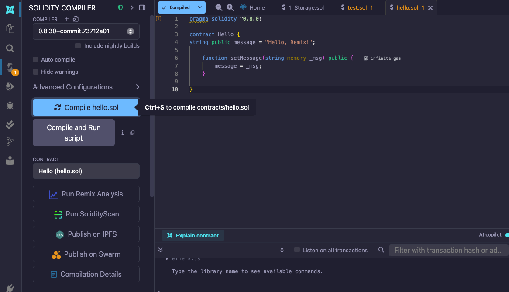
- 컴파일 완료 후 하단의
Compilation Details버튼을 눌러 ABI/바이트코드 확인 가능합니다.
- 컴파일 에러가 나면 pragma 버전(e.g. ^0.8.0)과 컴파일러 버전이 호환되는지 확인하세요.
3. 배포
- Deploy & Run Transactions 탭을 선택합니다.
- 환경(Environment) 선택을 택해주세요. 환경은 다음과 같습니다.
- JavaScript VM → 브라우저 내 임시 블록체인
- Injected Provider: 크롬 extention 기반의 외부 지갑(e.g. MetaMask)
- Web3 Provider → 실제 네트워크 RPC 노드
Deploy 버튼을 클릭하여 컨트랙트 배포합니다. 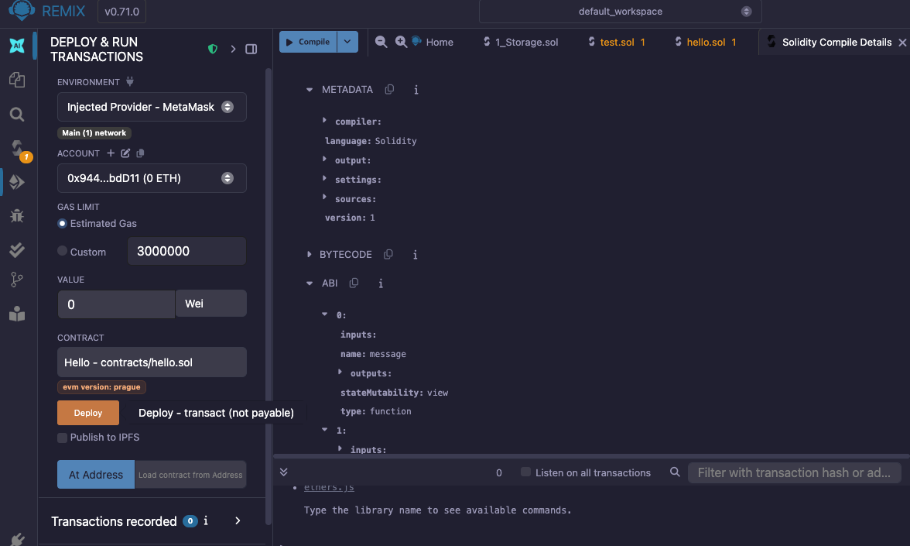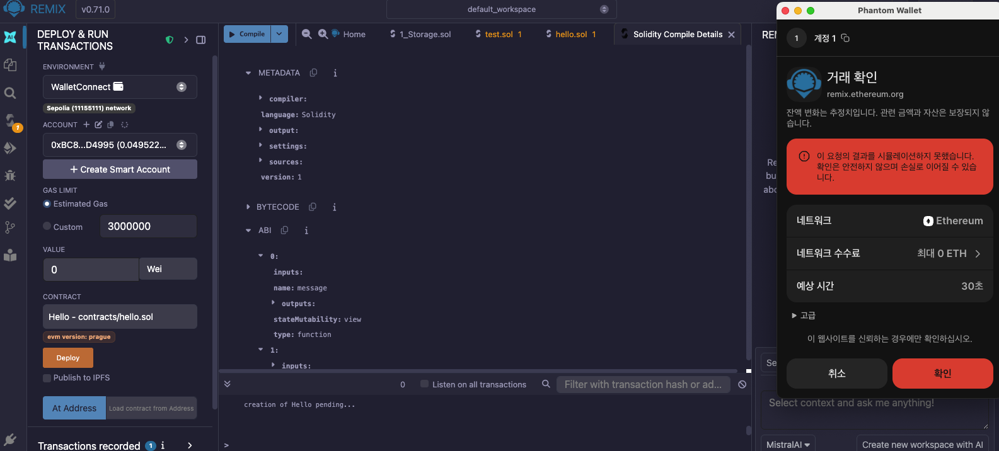
4. 실행 및 테스트
- 배포가 완료되면 왼쪽 하단 Deployed Contracts에 인스턴스가 표시됩니다.
- message(public 변수), setMessage(함수)가 자동으로 UI 버튼으로 생성됩니다.
- message 버튼 클릭 → 초기값 확인
setMessage("Hi!")호출 → 트랜잭션 전송 후 message 값 변경 확인- 가스비/실행 로그는 우측 콘솔에서 확인할 수 있습니다.
 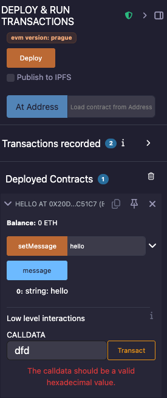
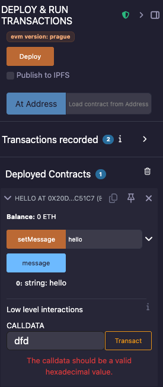
5. 디버깅 & 분석
실행된 트랜잭션 선택 후 Debugger에서 단계별 추적가능합니다. (Gas 비용, 메모리 사용량, 스토리지 상태 확인)
HardHat
HardHat는 Ethereum 기반의 스마트 컨트랙트를 개발할 수 있는 프레임워크 입니다. 주요 기능은 다음과 같습니다
- 개발 환경 제공: 로컬에서 이더리움 네트워크 시뮬레이션
- 플러그인 시스템 (e.g. Ethers.js, Waffle, OpenZeppelin)
- cli 기반 자동화된 컴파일 & 배포
- 테스트 지원: Mocha/Chai 같은 테스트 프레임워크와 통합되어 있어, 단위 테스트 및 시뮬레이션을 쉽게 할 수 있음
- 디버깅 및 가스 리포트: 에러 로그를 자세히 확인 및 트랜잭션 실행에 소모되는 가스를 분석
설치
- Hardhat은 Node.js환경에서 동작합니다. v22 이상의 Node.js를 사전에 설치해주세요.
- 프로젝트 디렉토리로 이동해주세요
mkdir hardhat-example
cd hardhat-example
- Hardhat 프로젝트를 시작해주세요
npx hardhat --init
- 프로젝트 구조는 다음과 같습니다
project-root/
│
├── hardhat.config.ts # Solidity 컴파일러 버전, 네트워크, 플러그인, Task 설정 등 Hardhat의 메인 구성 파일
│
├── contracts/ # Solidity 스마트 컨트랙트 및 테스트용 .t.sol 파일 저장
│ ├── Counter.sol
│ └── Counter.t.sol
│
├── test/ # TypeScript 기반의 통합 테스트 파일
│ └── Counter.ts
│
├── ignition/ # 공식 배포 프레임워크 Ignition 모듈 (배포 상태를 기록하고 관리)
│ └── modules/
│ └── Counter.ts
│
├── scripts/ # 배포·상호작용·운영 자동화를 위한 실행 스크립트
│ └── send-op-tx.ts
│
└── package.json
# (선택) npm 패키지 의존성과 스크립트 관리
자주 사용하는 명령어
- 컴파일
npx hardhat compile
- 로컬 네트워크 실행
로컬 RPC 노드를 띄워 개발용 체인을 실행합니다.
npx hardhat node
- 테스트
test/의 스펙을 로컬 EDR 시뮬레이션에서 실행합니다.
npx hardhat test
- 배포
Ignition을 이용해 배포합니다.
npx hardhat ignition deploy ignition/modules/{배포할파일}.ts --network {원하는 네트워크. e.g. mainnet, localhost, sepolia}
INFURA
Infura는 Ethereum 및 IPFS 네트워크에 쉽게 접근할 수 있도록 RPC(원격 노드) 인프라를 제공하는 서비스입니다. Infura를 통해 이더리움 메인넷 및 테스트넷에 쉽게 연결할 수 있습니다. 회원가입하고 API KEY를 발급 받아봅시다.
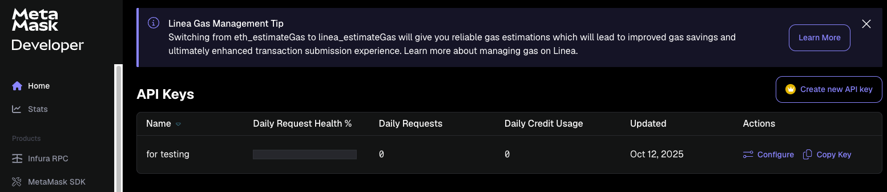
Infura RPC에서 API key와 각 네트워크 별 endpoint를 확인할 수 있습니다. 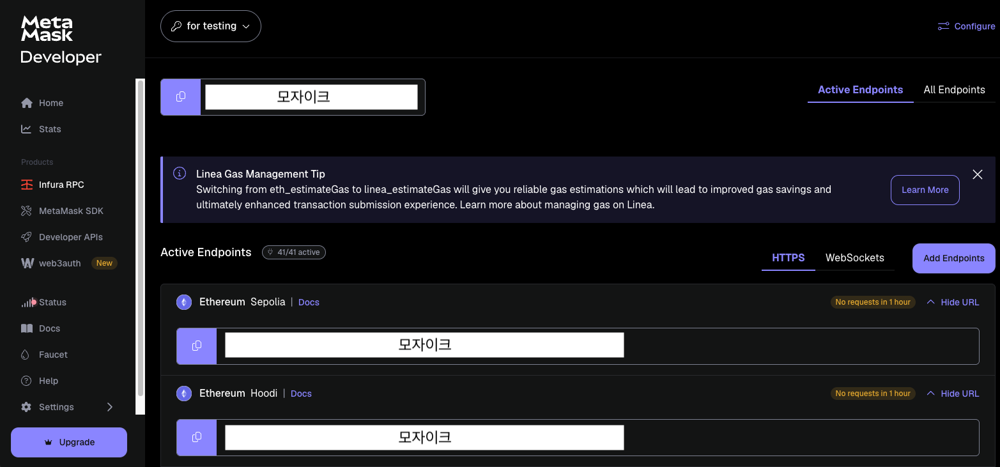
Metamask
MetaMask는 이더리움 블록체인과 상호작용할 수 있는 지갑 애플리케이션입니다. 아래의 과정을 거쳐 환경 설정을 해봅시다.
- 브라우저 익스텐션을 설치해주세요.

- 이더리움 계정을 생성해주세요.

- 이더리움 계정에 sepolia network가 추가되어 있는지 확인해주세요.
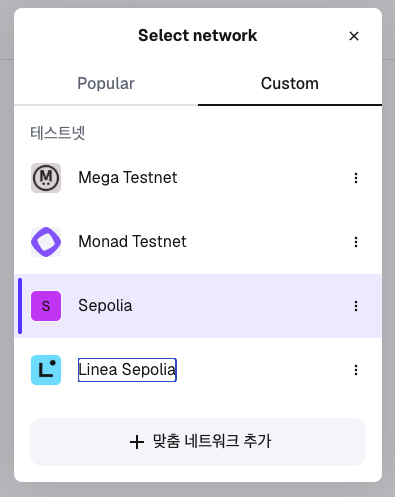
- 테스트용 이더(SepoliaETH)를 받을 겁니다. Sepolia Faucet은 테스트용 이더를 무료로 받을 수 있는 공식 테스트넷 보급소입니다.
받기를 누르고 주소를 복사해주세요. Goolgle Cloud Web3에서 Ethereum Sepolia Faucet 서비스를 제공합니다. 복사한 주소를 붙여넣고Receive 0.05 Sepolia ETH버튼을 눌러주세요.

실습: 컨트랙트를 Sepolia에 배포하기
위에서 살펴본 Hardhat 기본 명령어(compile, test, run)를 그대로 활용하면서 아래 순서를 따라가면 로컬 테스트와 Sepolia 배포까지 한 번에 경험할 수 있습니다.
1. Solidity 컨트랙트 작성
contracts/Example.sol에 예제 컨트랙트를 추가합니다. 각 함수와 이벤트에 달린 주석을 통해 동작을 점검해보세요.
// SPDX-License-Identifier: MIT
pragma solidity ^0.8.28;
// Example
// 메시지를 저장하고 간단한 입·출금 흐름을 실습하기 위한 예제 컨트랙트입니다.
contract Example {
address public immutable owner;
string private storedMessage;
// 새로운 메시지가 등록될 때마다 알림을 보냅니다.
event MessageUpdated(string newMessage);
// 입금이 발생하면 누가 얼마를 보냈는지 기록합니다.
event Deposited(address indexed from, uint256 amount);
// 출금이 발생하면 수신자와 금액을 기록합니다.
event Withdrawn(address indexed to, uint256 amount);
constructor(string memory initialMessage) {
owner = msg.sender;
storedMessage = initialMessage;
}
function readMessage() external view returns (string memory) {
return storedMessage;
}
function updateMessage(string calldata newMessage) external onlyOwner {
storedMessage = newMessage;
emit MessageUpdated(newMessage);
}
function deposit() external payable {
require(msg.value > 0, "VALUE_MUST_BE_POSITIVE");
emit Deposited(msg.sender, msg.value);
}
function withdraw(address payable receiver, uint256 amount) external onlyOwner {
require(amount <= address(this).balance, "INSUFFICIENT_FUNDS");
receiver.transfer(amount);
emit Withdrawn(receiver, amount);
}
function contractBalance() external view returns (uint256) {
return address(this).balance;
}
modifier onlyOwner() {
require(msg.sender == owner, "ONLY_OWNER");
_;
}
}
2. Hardhat 테스트 코드 작성
test/example.test.ts를 만들어 아래의 코드를 붙여넣어주세요. 각 테스트에 적힌 주석을 통해 어떤 흐름을 검증하는지 바로 파악할 수 있습니다.
import assert from "node:assert/strict";
import { describe, it } from "node:test";
import hre from "hardhat";
// Example 컨트랙트의 기본 동작을 Hardhat 환경에서 검증합니다.
describe("Example", function () {
// Hardhat 3에서는 network.connect()를 통해 fixture 도우미를 획득합니다.
async function loadFixture<T>(fixture: () => Promise<T>) {
const { networkHelpers } = await hre.network.connect();
return networkHelpers.loadFixture(fixture);
}
// 반복되는 배포 절차를 고정해 테스트 간 독립성과 속도를 확보합니다.
async function deployExampleFixture() {
const { viem } = await hre.network.connect();
const [deployer, participant] = await viem.getWalletClients();
const contract = await viem.deployContract("Example", ["처음 메시지"], {
account: deployer.account,
});
const publicClient = await viem.getPublicClient();
return { contract, deployer, participant, publicClient };
}
it("초기 메시지를 저장한다", async function () {
const { contract, publicClient } = await loadFixture(deployExampleFixture);
// 배포 직후 readMessage가 제공한 초기값을 그대로 반환하는지 확인합니다.
const message = await publicClient.readContract({
abi: contract.abi,
address: contract.address,
functionName: "readMessage",
args: [],
});
assert.strictEqual(message, "처음 메시지");
});
it("소유자가 메시지를 변경한다", async function () {
const { contract, publicClient, deployer } = await loadFixture(
deployExampleFixture
);
// 소유자 지갑으로 메시지를 갱신합니다.
await deployer.writeContract({
abi: contract.abi,
address: contract.address,
functionName: "updateMessage",
args: ["새로운 메시지"],
});
// 변경된 메시지가 즉시 조회되는지 확인합니다.
const message = await publicClient.readContract({
abi: contract.abi,
address: contract.address,
functionName: "readMessage",
args: [],
});
assert.strictEqual(message, "새로운 메시지");
});
it("소유자가 아닌 경우 메시지 변경을 거부한다", async function () {
const { contract, participant } = await loadFixture(deployExampleFixture);
// participant 계정은 소유자가 아니므로 revert가 발생해야 합니다.
await assert.rejects(
participant.writeContract({
abi: contract.abi,
address: contract.address,
functionName: "updateMessage",
args: ["권한 없음"],
}),
/ONLY_OWNER/
);
});
it("입금과 출금 흐름을 처리한다", async function () {
const { contract, publicClient, participant, deployer } = await loadFixture(
deployExampleFixture
);
const depositValue = 1_000_000_000_000_000n;
// 임의 참가자가 0.001 ETH를 입금합니다.
await participant.writeContract({
abi: contract.abi,
address: contract.address,
functionName: "deposit",
args: [],
value: depositValue,
});
// 입금 이후 잔액이 정확히 늘어났는지 확인합니다.
const balanceAfterDeposit = await publicClient.readContract({
abi: contract.abi,
address: contract.address,
functionName: "contractBalance",
args: [],
});
assert.strictEqual(balanceAfterDeposit, depositValue);
// 소유자가 동일 금액을 출금합니다.
await deployer.writeContract({
abi: contract.abi,
address: contract.address,
functionName: "withdraw",
args: [deployer.account.address, depositValue],
});
// 출금 이후 잔액이 0으로 돌아왔는지 확인합니다.
const balanceAfterWithdraw = await publicClient.readContract({
abi: contract.abi,
address: contract.address,
functionName: "contractBalance",
args: [],
});
assert.strictEqual(balanceAfterWithdraw, 0n);
});
it("0 ETH 입금은 거부된다", async function () {
const { contract, participant } = await loadFixture(deployExampleFixture);
// 값이 0인 입금 시 require가 revert를 발생시키는지 검증합니다.
await assert.rejects(
participant.writeContract({
abi: contract.abi,
address: contract.address,
functionName: "deposit",
args: [],
value: 0n,
}),
/VALUE_MUST_BE_POSITIVE/
);
});
});
3. 배포 스크립트 준비
scripts/deploy-example.ts는 Sepolia RPC에 연결해 컨트랙트를 배포하고, readMessage로 초기값을 확인합니다. 실행 흐름마다 주석으로 동작을 설명해두었습니다.
import hre from "hardhat";
async function main() {
const { viem } = await hre.network.connect();
const [deployer] = await viem.getWalletClients();
const publicClient = await viem.getPublicClient();
console.log("배포 지갑:", deployer.account.address);
const contract = await viem.deployContract(
"Example",
["Hardhat과 Sepolia에서 만나요!"],
{ account: deployer.account }
);
console.log("Example 배포 완료:", contract.address);
// 배포 직후 readMessage가 제공한 초기값을 그대로 반환하는지 확인합니다.
const currentMessage = await publicClient.readContract({
abi: contract.abi,
address: contract.address,
functionName: "readMessage",
args: [],
});
console.log("초기 메시지:", currentMessage);
}
main().catch((error) => {
// Hardhat이 예외를 캐치할 수 있도록 종료 코드를 설정합니다.
console.error(error);
process.exitCode = 1;
});
4. 환경 변수 설정
Sepolia 배포에는 RPC 엔드포인트와 프라이빗 키가 필요합니다. .env파일에 아래의 코드를 복사/붙여넣어주세요. PRIVATE KEY는 공개하시면 안 됩니다. SEPOLIA_RPC_URL는 Infura에서 발급받은 RPC URL이고 SEPOLIA_PRIVATE_KEY는 metamask에서 생성한 계정의 개인 키입니다. metamask에서 계정 세부 정보 > 개인 키 > 비밀 번호 입력 과정을 거처서 개인 키를 받아주세요.
npx hardhat vars set SEPOLIA_RPC_URL https://sepolia.infura.io/v3/<YOUR_ID>
npx hardhat vars set SEPOLIA_PRIVATE_KEY 0x<YOUR_PRIVATE_KEY>
.env파일에서 환경변수를 읽어와 config 파일에 넣어야합니다. 먼저 다음의 명령어를 실행해 주세요.
npm i dotenv
이제 hardhat.config.ts파일을 다음과 같이 변경해주세요.
import "dotenv/config";
import type { HardhatUserConfig } from "hardhat/config";
import hardhatToolboxViemPlugin from "@nomicfoundation/hardhat-toolbox-viem";
const SEPOLIA_RPC_URL = process.env.SEPOLIA_RPC_URL;
const SEPOLIA_PRIVATE_KEY = process.env.SEPOLIA_PRIVATE_KEY;
const config: HardhatUserConfig = {
plugins: [hardhatToolboxViemPlugin],
solidity: {
profiles: {
default: {
version: "0.8.28",
},
production: {
version: "0.8.28",
settings: {
optimizer: {
enabled: true,
runs: 200,
},
},
},
},
},
networks: {
hardhatMainnet: {
type: "edr-simulated",
chainType: "l1",
},
hardhatOp: {
type: "edr-simulated",
chainType: "op",
},
sepolia: {
type: "http",
chainType: "l1",
url: SEPOLIA_RPC_URL!,
accounts: SEPOLIA_PRIVATE_KEY ? [SEPOLIA_PRIVATE_KEY] : [],
},
},
};
export default config;
5. 테스트와 배포 실행
다음의 명령어를 실행해주세요.
npm install
npx hardhat compile
npx hardhat test
npx hardhat run scripts/deploy-example.ts --network sepolia
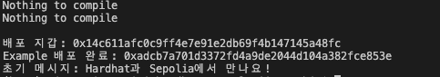
성공적으로 실행되면 콘솔에 배포 주소와 초기 메시지가 출력됩니다. Sepolia Etherscan에서 주소를 조회하면 트랜잭션과 이벤트 로그를 직접 확인할 수 있습니다.
프로젝트 소개
앞으로의 세션을 통해 탈중앙화 서버리스 라이선스 플랫폼을 구현하며 솔디리티를 학습합니다. 라이센스 관리 플랫폼은 이더리움 위에서 스마트 컨트랙트를 이용해 동작합니다. IPFS를 사용해 코드를 암호화하여 관리하고, 위원회(Committee) 다중서명으로 실행 키 분배를 통제합니다.
요구사항
기능 요구사항
- User는 배포자, 위원회, 사용자로 구분됩니다.
- 배포자: 코드를 배포한 사람
- 위원회: 라이센스를 검증하는 사람
- 사용자: 코드를 사용하는 사람
- 배포자는 codeHash, cipherCid의 정보를 포함하여 코드를 등록할 수 있습니다.
- 배포자는 만료일과 실행 횟수를 지정하여 라이선스를 발급합니다.
- 사용자는 코드를 실행할 때마다 권한을 소진합니다. (잔여 횟수가 줄어듭니다)
- 위원회는 실행 건마다 암호화된 조각을 제출합니다.
- 배포자는 본인의 라이선스나 코드 전체를 취소하거나 정지할 수 있어야 합니다.
- 모든 동작은 이벤트로 기록되어 누구나 확인할 수 있습니다.
- 사용자는 오프체인 서명을 이용해 가스 없이 실행을 위임할 수 있습니다.(낮은 우선 순위)
- 위원회는 멤버를 관리하고 임계치(threshold)를 설정합니다.(낮은 우선 순위)
비기능 요구사항
- Hardhat, Remix, Metamask 등을 활용해 개발 환경을 구성합니다.
- 보안성: 키를 여러 위원에게 분산하여 보안을 강화합니다.
- 실행 전에는 로컬에서 코드 해시를 검증하여 무결성을 확인합니다.
- 저장 공간과 가스를 절약하기 위해 필요한 정보만 온체인에 기록합니다.
- 표준 토큰(ERC-1155/721) 규격을 사용하여 호환성을 확보합니다.
- 온체인에는 평문 코드를 저장하지 않고, 암호화된 파일만 IPFS에 저장합니다.
- 실행은 오프체인 환경(안전한 장소)에서 이루어지며, 실행 후 민감한 데이터는 즉시 삭제합니다.(낮은 우선 순위)
- 위원회 응답이 부족해도 서비스가 중단되지 않도록 여유 있게 구성합니다.(낮은 우선 순위)
User flow
- 코드 등록:
- 배포자가 자신의 코드를 준비합니다.
- 코드를 난독화하고 각각 keccak256로 AES-GCM으로 암호화합니다.
- AES-GCM로 암호화한 것은 IPFS에 업로드하여 위치를 나타내는 cipherCid를 얻습니다.
- codeHash, cipherCid 등의 정보를 포함해 온체인에 코드 배포에 대한 기록을 합니다.
- 라이선스 발급:
- 배포자가 실행권 토큰(ERC-1155)을 발급하고 사용자에게 판매합니다.
- 실행 요청:
- 사용자가 트랜잭션을 통해 위원회에 실행 요청을 보냅니다.
- 이때 임시 공개키(recipientPubKey)를 새로 생성해 같이 보냅니다.
- 컨트랙트를 통해 실행 횟수가 1 소진 됩니다.
- 컨트랙트에서 누가, 언제, 어떤 키로 실행했는지 기록했는지에 대한 이벤트를 발생시켜 위원회에 알립니다.
- 위원회 승인:
- 승인을 위해 위원회 자신이 보관하고 있는 암호화 키 조각을 사용자의 recipientPubKey로 암호화합니다.
- 이를 IPFS로 올려 사용자가 접근할 수 있도록 합니다.
- 위원회 N명 중 M명이 라이센스에 대해 승인합니다.
- 복원 및 실행:
- 사용자는 IPFS에서 키 조각을 가져와, 자신의 임시 개인키로 복호화합니다.
- M개 이상의 키 조각을 합쳐서 원본 데이터 키(DEK)를 복원합니다.
- 해시값을 비교하여 무결성을 확보합니다. (keccak256(code.zip) == codeHash)
- 복호화하여 code를 획득해 실행합니다.
- 취소:
- 특정 사용자의 라이센스를 취소하고 싶으면 컨트랙트로 실행권 토큰을 무효화합니다.
- 전체 라이센스를 취소하기 위해 컨트랙트로 라이선스 자체를 완전히 폐기합니다.
아키텍처
아키텍처는 다음과 같습니다. 
우리는 빨간색으로 표시된 부분에 관한 컨트랙트를 구현할 예정입니다. 배포자가 코드를 배포하고,라이센스 토큰을 매매, 코드 다운로드 요청, IPFS에 코드 업로드 및 다운로드를 학습합니다. Committee 운영과 관련된 코드는 제공됩니다.
축하합니다! 성공적으로 이더리움과 스마트 컨트랙트의 개념에 대해 학습하였습니다. 다음 시간에는 본격적으로 스마트 컨트랙트 개발을 시작하겠습니다.
도움이 될 만한 자료
- 크립토 좀비: 좀비 게임을 만들면서 Blockchain 기반 Dapp 기반을 학습할 수 있습니다. Solidity Course부터 진행하는 것을 추천드립니다.
- Google Cloud Web3: 구글 클라우드에서 만든 Web3 개발자 도구입니다. Ethureum(Sepolia)을 비롯한 다양한 코인의 Faucet을 지원합니다.
- Remix IDE: 온라인 Remix IDE입니다.
- Hardhat: Hardhat 공식 웹 페이지입니다.
참고 자료
- Ethereum development documentation
- Ethereum Yellow Paper
- Solidity 공식 문서 한글 번역
- Solidity 공식 문서
- Ethereum for Dummies: 2015년 Ethereum Dev Con에서 진행했던 Dr. Gavin Wood(Ethereum's CTO)의 이더리움 소개 발표